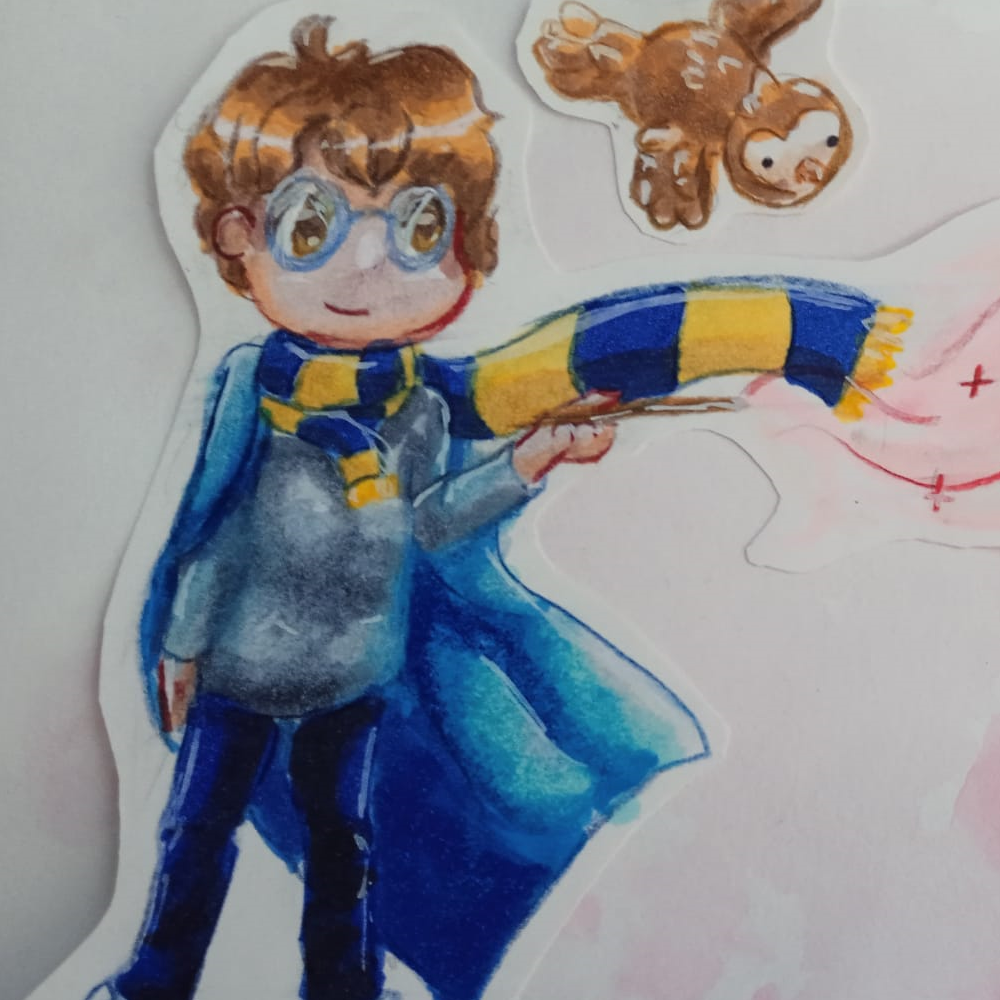

HarupiOS
🔔
Welcome to my personal OS
Introduction
Welcome to my OS-looking portfolio.
On this website, you can learn about me with an original interface.
This website was made during the Stardance hackclub event using this walkthrough.

This website is open-source.